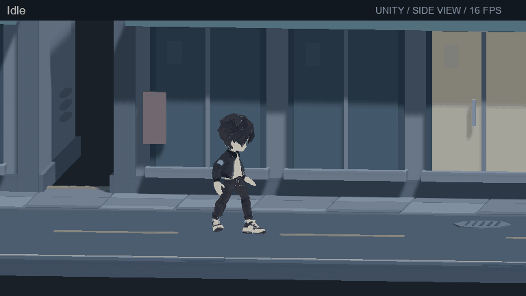
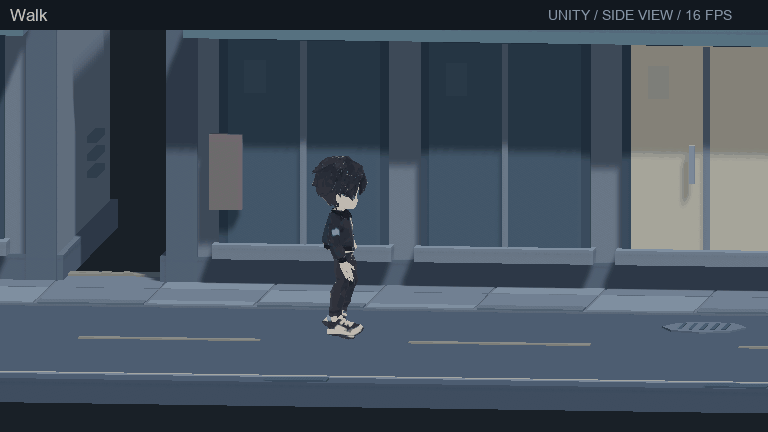
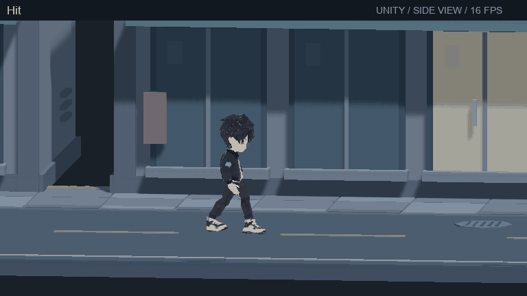
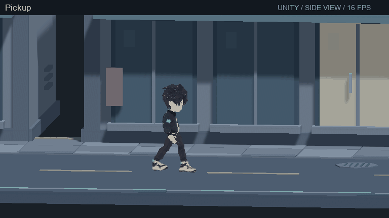
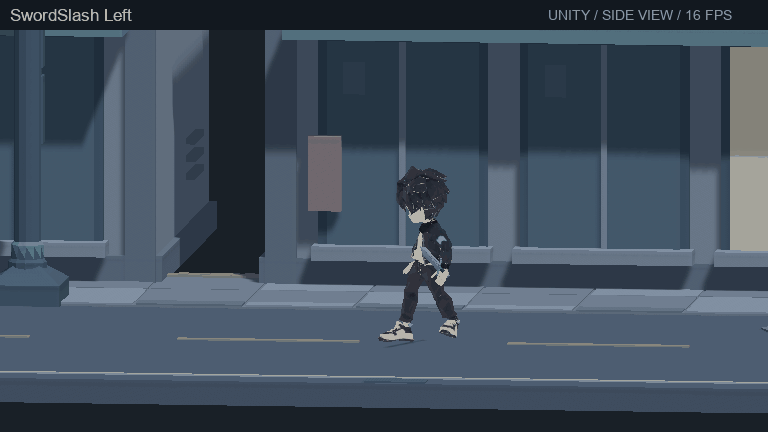
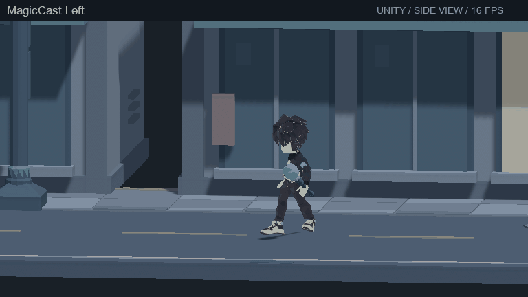
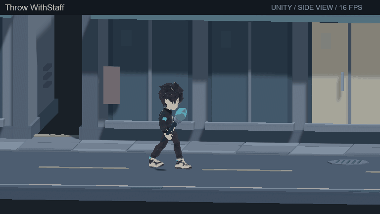
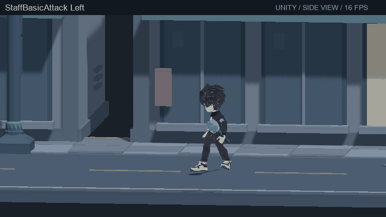

주인공 동작 28개 · 우중충한 도시 Unity의 실제 저장된 Humanoid/Animator/장착 프리팹으로 렌더링했습니다. 기본 동작 15종과 좌우 방향·장비 조건을 함께 확인할 수 있습니다. X/Y 축으로 플레이하며 카메라는 측면에서 약 7도만 기울여 두께가 보이게 했습니다. 동작 GIF는 16fps입니다. 투척은 아트 미리보기이며 실제 아이템 효과는 게임 콜백에 연결해야 합니다. 이번 개정의 추가 Meshy 크레딧은 0입니다.

Idle · 4.0초 
Walk · 0.541초 Run · 0.421초 Punch · 0.3초 Jump · 2.546초 Land · 0.1초 Dash · 0.18초 
Hit · 0.3초 Dead · 3.5초 Drink · 1.35초 Throw · 0.75초 SwordSlash · 0.45초 MagicCast · 0.65초 Interact · 0.85초 
Pickup · 1.0초 Punch Left · 0.3초 Jump Left · 2.546초 Drink Left · 1.35초 Throw Left · 0.75초 
SwordSlash Left · 0.45초 
MagicCast Left · 0.65초 
Throw WithStaff · 0.75초 Interact WithStaff · 0.85초 Pickup WithStaff · 1.0초 SwordBasicAttack · 0.3초 SwordBasicAttack Left · 0.3초 StaffBasicAttack · 0.3초 
StaffBasicAttack Left · 0.3초 01_Street_Props 02_Platform_Buildings 03_Rooftop_Utilities 04_Tutorial_Gameplay 05_Stage01_Rooftops